01
Formar investigadores
Vincular estudiantes de pregrado y maestría con proyectos reales bajo dirección de investigadores reconocidos.
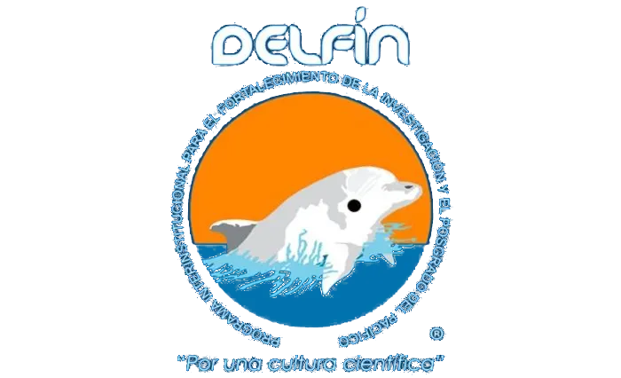
XXXI Verano de la Investigación CientíficaUna estancia de investigación de siete semanas en la Universidad Libre Seccional Barranquilla, donde la ciencia, la academia y la cultura caribeña se encuentran para formar la próxima generación de investigadores latinoamericanos.
El Programa Delfín es una experiencia académica de investigación que conecta a estudiantes e investigadores de instituciones afiliadas en América Latina. Actualmente, en la Universidad Libre se desarrolla principalmente entre México y Colombia.
El Programa Delfín fortalece la cultura de colaboración científica entre instituciones de educación superior y centros de investigación. Hoy reúne 332 instituciones de 9 países, articulando movilidad académica y divulgación de la ciencia.
Durante el XXXI Verano de la Investigación Científica, los estudiantes seleccionados realizan una estancia de siete semanas (8 de junio al 24 de julio de 2026) acompañados por investigadores reconocidos. La Universidad Libre Seccional Barranquilla recibe esta cohorte con una agenda que integra trabajo de laboratorio, seminarios, visitas técnicas y una programación cultural propia de la Puerta de Oro del Caribe colombiano.
Vincular estudiantes de pregrado y maestría con proyectos reales bajo dirección de investigadores reconocidos.
Ampliar las redes académicas regionales y abrir caminos hacia posgrados nacionales e internacionales.
Comunicar los resultados de la estancia en el Congreso Internacional Delfín, presencial y virtual.
Fortalecer la integración latinoamericana mediante movilidad académica y diálogo intercultural.
Cada estudiante se vincula a una facultad anfitriona, que le mostrará sus espacios y actividades más representativas. Estas son las experiencias diferenciadas que se ofrecen en la cohorte 2026.
Los visitantes conocerán el Hospital Simulado y sus prácticas clínicas, junto con los espacios de salud pública, enfermería e instrumentación quirúrgica de la facultad.
Recorrido por el Laboratorio de Inteligencia Artificial y por los espacios del Centro de Estudios Avanzados (CEAC), donde conocerán sus proyectos en sistemas inteligentes y ciencia de datos.
Visita a los consultorios jurídicos, donde conocerán el trabajo de la facultad en derecho público, constitucional y derechos humanos.
Del 8 de junio al 24 de julio de 2026. Estas son las actividades institucionales programadas; en paralelo, cada estudiante avanza en su proyecto con el investigador asignado.
Haz clic en una actividad para inscribirte.
Inicio de la estancia con el seminario taller de apertura y la ceremonia oficial de bienvenida en la Universidad Libre.
Recorrido turístico introductorio por Barranquilla y, al día siguiente, jornada simultánea por facultad. Cada estudiante asiste a la actividad de su facultad anfitriona.
Encuentro con la cultura barranquillera a través de clase de baile.
Tarde deportiva para fortalecer la convivencia entre los Delfín y los estudiantes locales de la Universidad Libre.
Esta semana se reserva para el trabajo autónomo con el investigador asignado. No hay agenda institucional programada.
Para conocer uno de los hospitales de práctica, con llegada independiente al punto de encuentro.
Acto institucional de cierre, socialización de resultados, Despedida 2026.
La Universidad Libre Seccional Barranquilla cuenta con dos sedes. Consulta cómo llegar a cada una.
Km 7 Antigua Vía a Puerto Colombia
(Cra. 51B #135-100), Barranquilla
La estancia culmina en la divulgación pública de los resultados. La participación en el Congreso Internacional Delfín es para todo estudiante que haya cursado el Verano de la Investigación.
La estancia se complementa con una experiencia cultural en la Puerta de Oro del Caribe colombiano. Y si te animas, el Caribe tiene mucho más por descubrir en tu tiempo libre.
Lugares que harán parte de la experiencia con el programa.
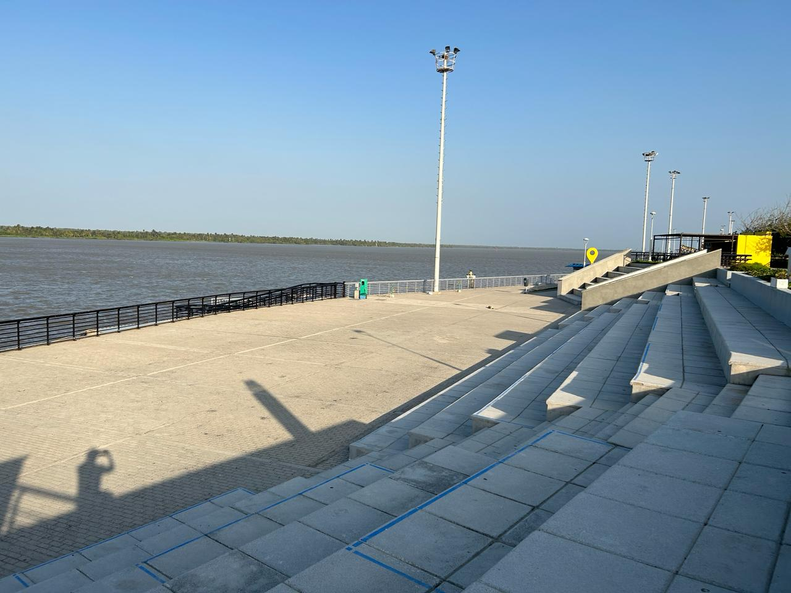
EmblemáticoEspacio público insignia sobre el río Magdalena, con miradores, gastronomía y vida nocturna.
Barranquilla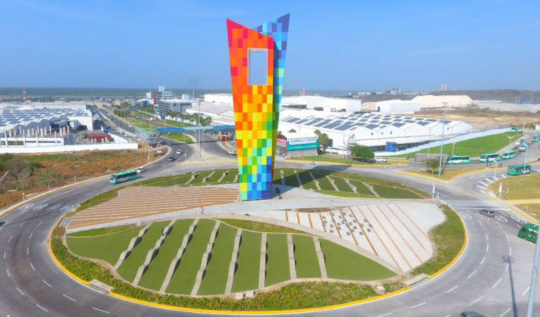
MonumentoEl hito moderno más reconocible de Barranquilla: una estructura colorida que se ha vuelto símbolo de la ciudad.
Barranquilla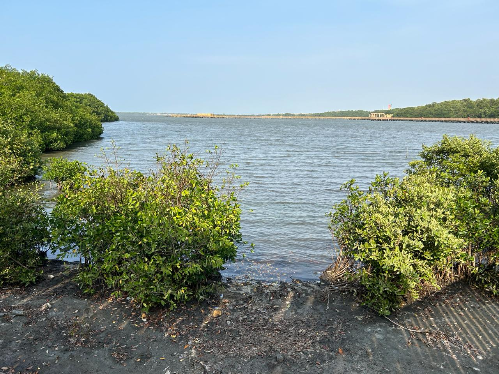
NaturalezaEcoparque de manglares y aves frente al mar, con senderos y miradores. Un respiro natural a las afueras de la ciudad.
Barranquilla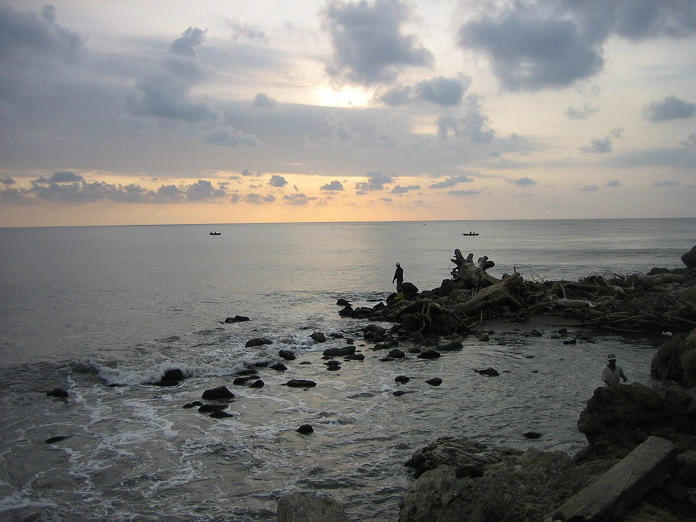
Río y marPunto único donde el río Magdalena se encuentra con el mar. Se llega en un pintoresco trencito sobre el tajamar.
BarranquillaPlaya de aguas tranquilas, ideal para deportes náuticos y un día de integración frente al mar.
Tubará, Atlántico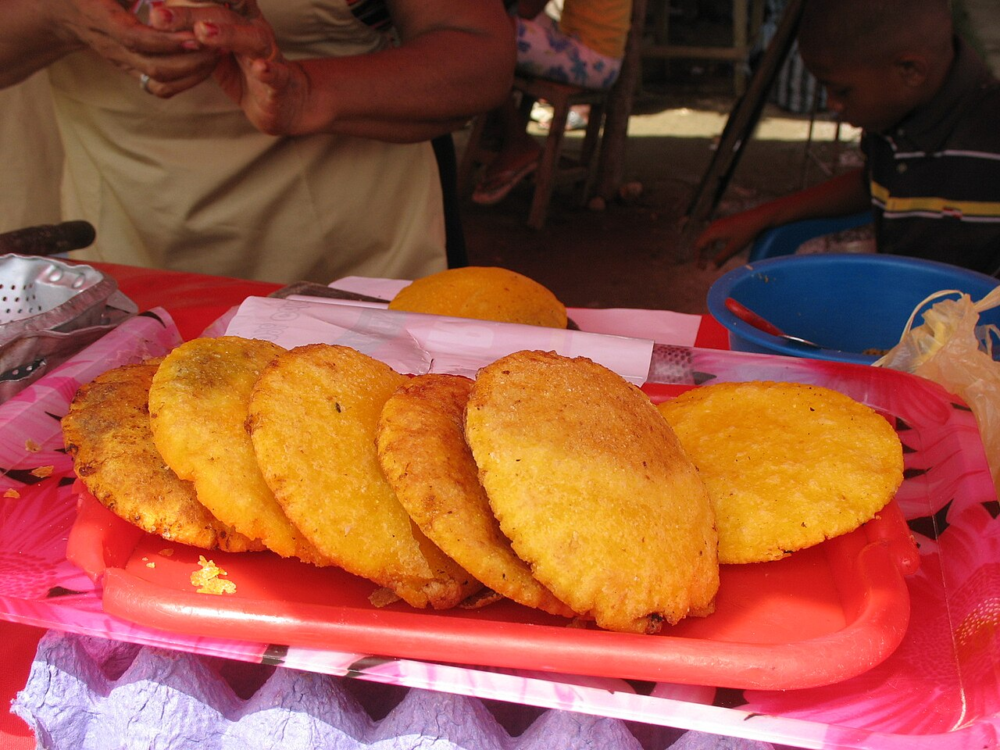
GastronomíaLa cocina del Caribe: arepa de huevo, butifarra soledeña, sancocho de guandú y frutas tropicales.
BarranquillaDestinos recomendados para los fines de semana, por tu cuenta. Cartagena y Santa Marta están a pocas horas de Barranquilla.
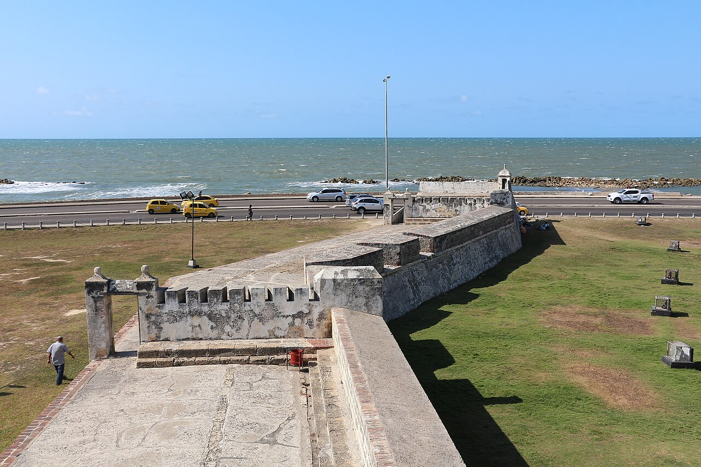
CartagenaCentro histórico colonial, Patrimonio de la Humanidad por la UNESCO: calles de colores, balcones y plazas.
Cartagena · 2 h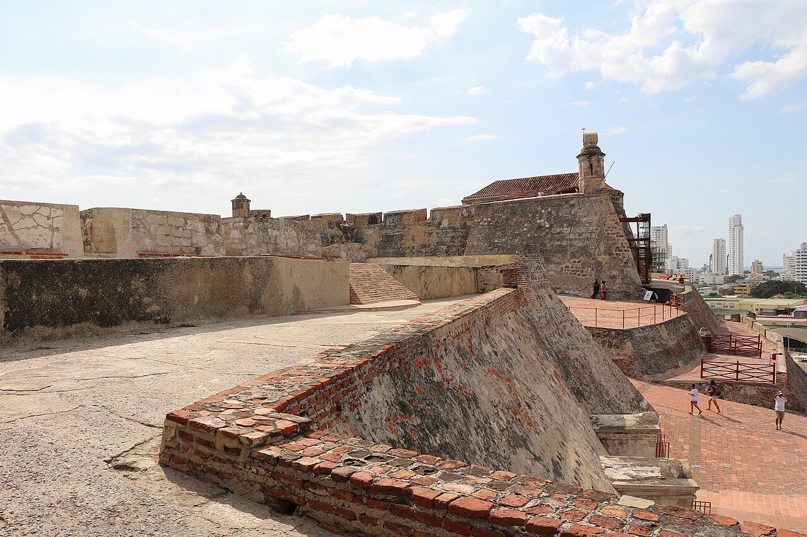
CartagenaLa fortaleza española más imponente de América, con túneles y vistas panorámicas de la bahía.
Cartagena · 2 h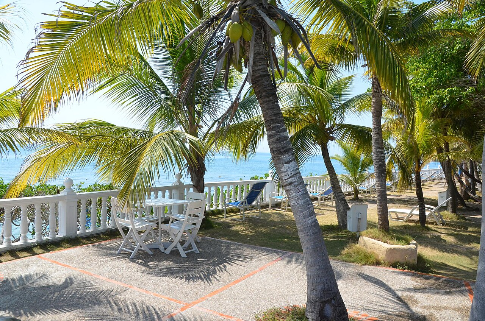
CartagenaArchipiélago de aguas turquesa a una hora en lancha: snorkel, playas blancas y arrecifes de coral.
Cartagena · en lancha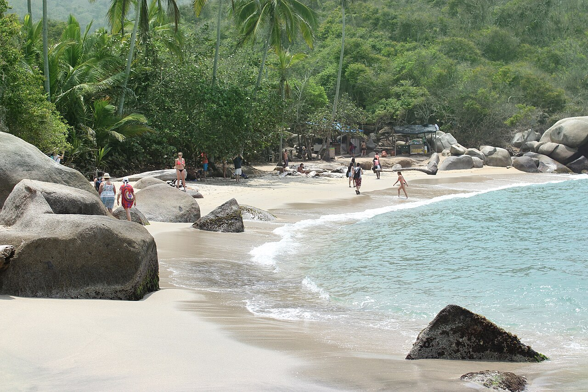
Santa MartaSelva tropical que se funde con el mar: playas vírgenes como Cabo San Juan, senderos y biodiversidad única.
Santa Marta · 3 h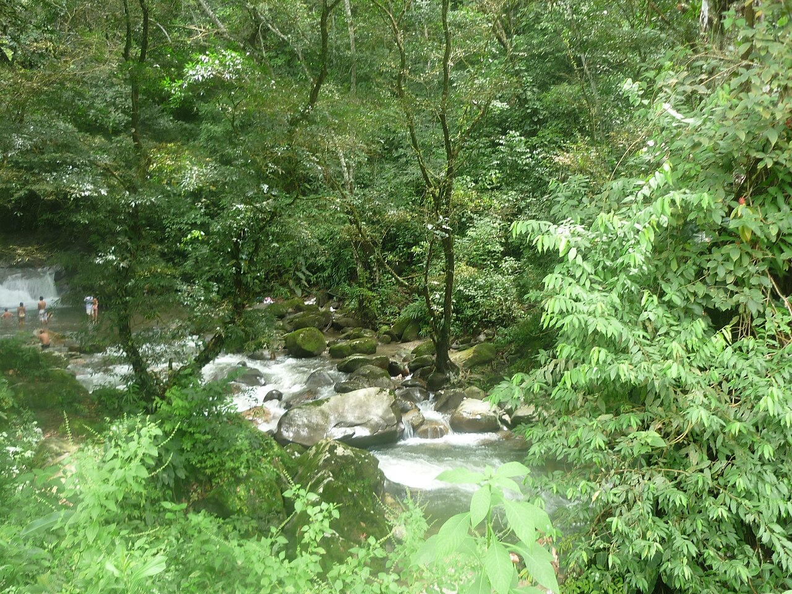
Santa MartaPueblo de montaña en la Sierra Nevada: cascadas, fincas de café y cacao, y atardeceres entre las nubes.
Santa Marta · sierra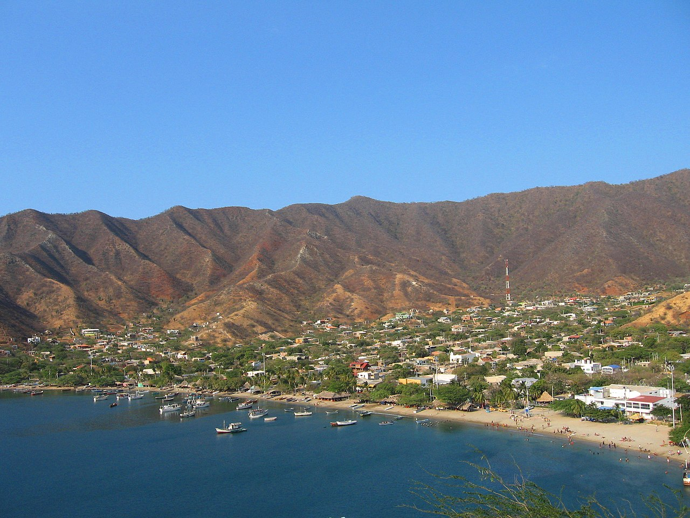
Santa MartaEl centro colonial más antiguo de Colombia y la cercana bahía pesquera de Taganga, perfecta para el atardecer.
Santa Marta · 3 h